Pivot
This semester, I have the privilege of being a part of Berkeley Innovation (BI), one of Cal's human-centered design orgs. Through BI, I was placed into a team of four and assigned to work with software design company Vertigo (recently acquired by MLBAM). We were, then, tasked with developing a version control platform for designers, through which users could organize projects and collaborate on design files. My contributions include conducting competitor analysis, providing insight with respect to ideation, and working on the dashboard and project views (through all fidelity mockups). Currently, we are still working to finish our final product - check back again later for more updates!
Research + Sketches
My team and I began our ideation phase by completing research. Nickki was tasked with familiarizing herself with Github, Gabi conducted design interviews, Kylon conducted Github interviews, and I worked on competitive analysis. From my research, we learned that, while each offered features beneficial for design collaboration, no competitor actually had a fully-developed implementation of Vertigo's software idea. To that extent, Pixelapse was the closest to our idea, but we wanted to incorporate an in-app merge conflict feature.
See Full Report
At that point, we necessitated the following functions to create minimum viable product:
 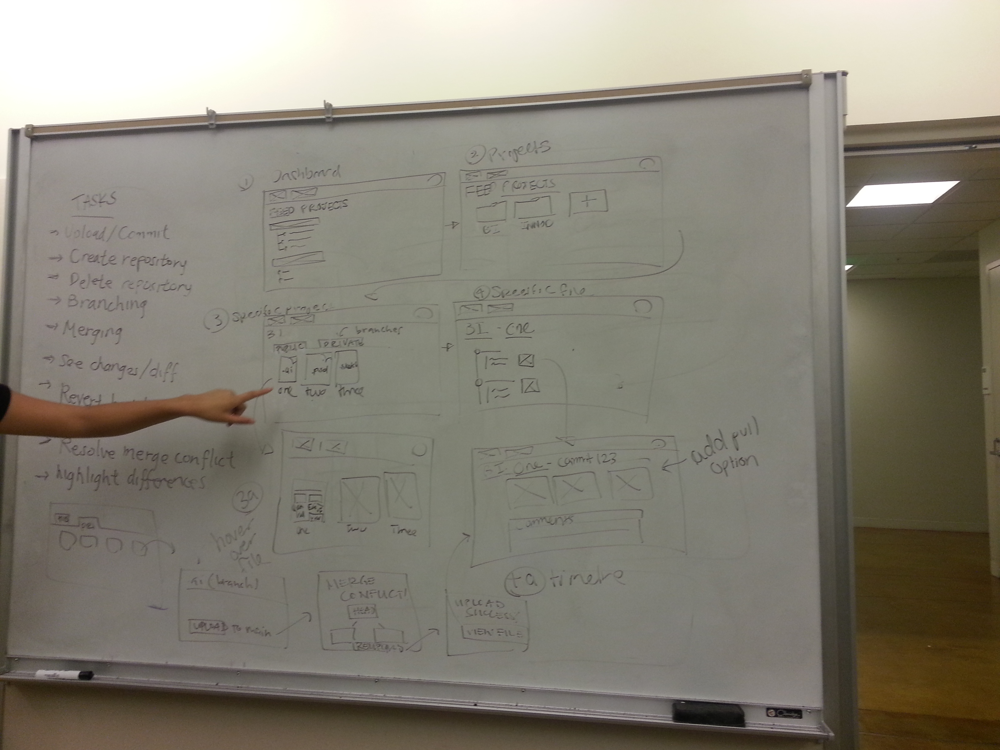
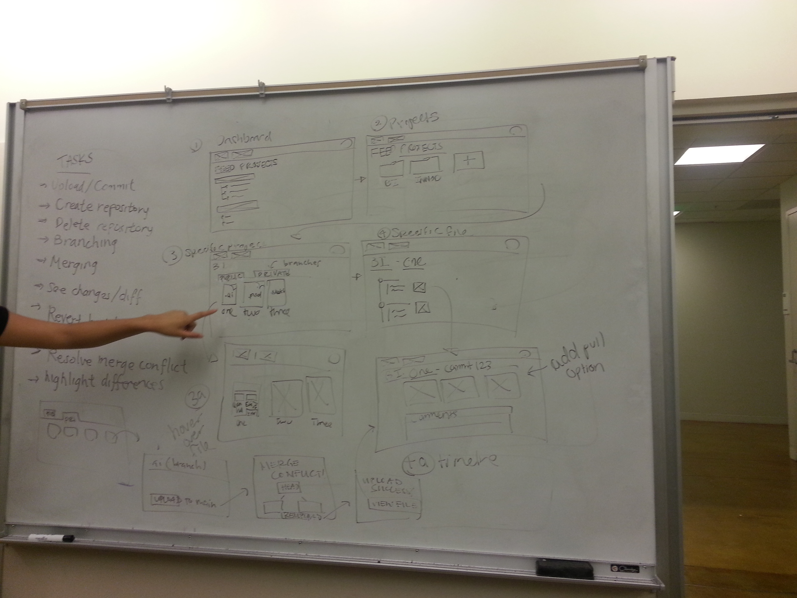
See Full Report
At that point, we necessitated the following functions to create minimum viable product:
- Project/file uploads
- Timeline view for each file
- Merge conflict resolutions
- Comment + notifications
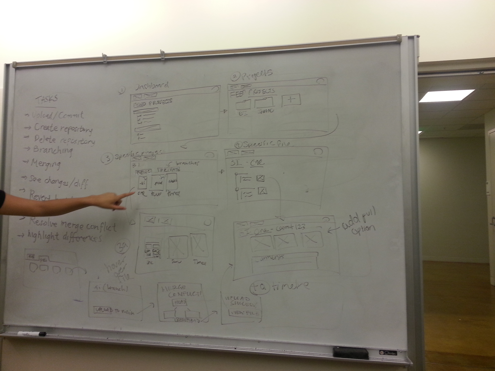
Lo-Fi Prototype
Next, we completed our lo-fi prototypes on Balsamiq. I worked specifically on laying out and connecting the newsfeed view (the very first view that you start on), as well as the projects view (both in tile and list view). The biggest takeaway from this particular part of our project was deciding placement and creating an intuitive visual. Because there were no actual stylings, each element's functionality was highlighted extensively.
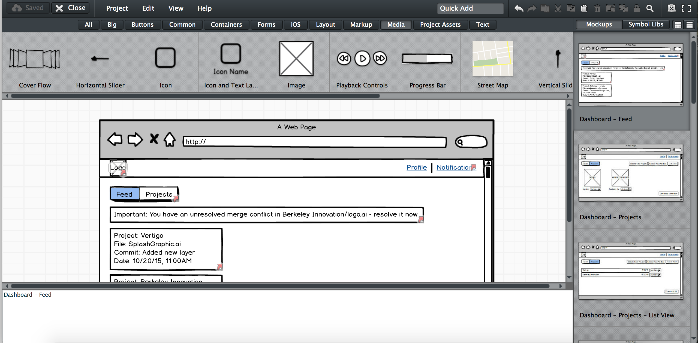
See Balasmiq Prototype
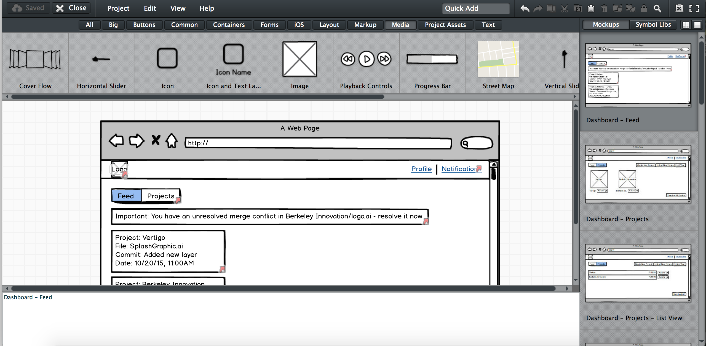
See Balasmiq Prototype
Mid-Fi Mockups
The next step for our team was to develop mid-fi prototypes. Accordingly, we started sharpening the elements from Balsamiq onto Illustrator. We developed the views similarly and received feedback from our supervisor. We went through several iterations over the course of three weeks. Again, I worked specifically on the newsfeed view, the project views, and the 'add project' functionality. Some of the changes I had to make through each iteration involved reconfiguring the layout in such a way that certain call-to-action elements stood out and were intuitive for users.
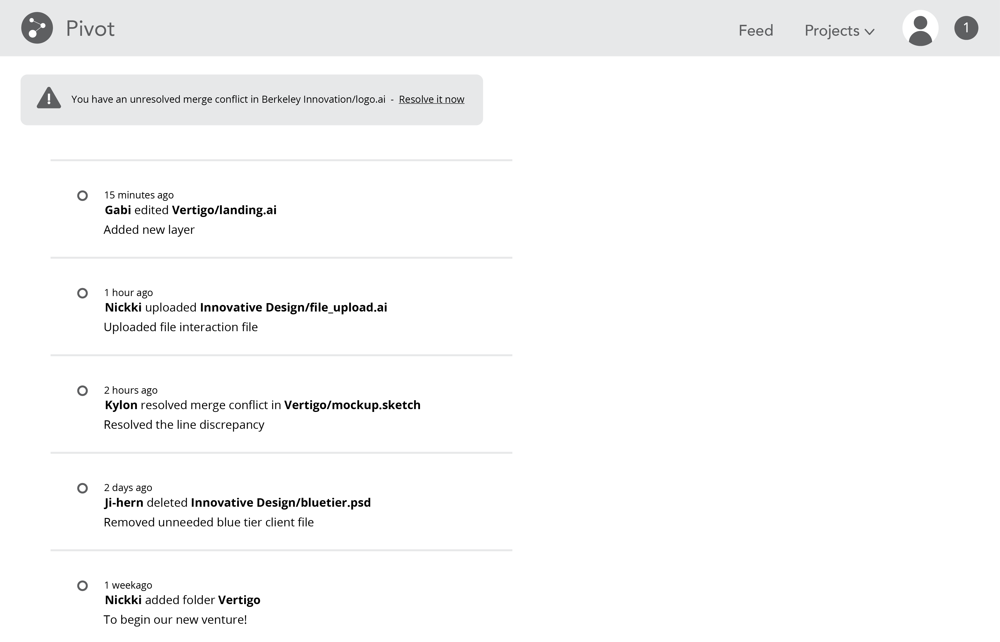 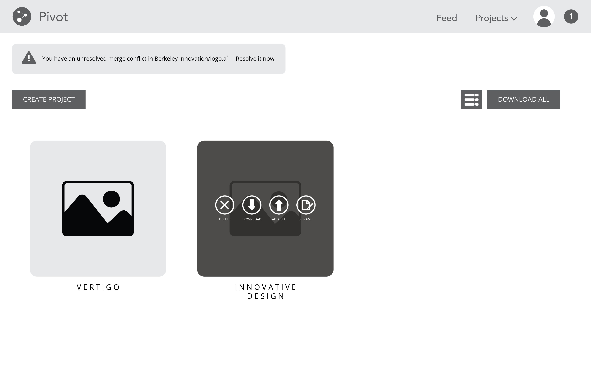 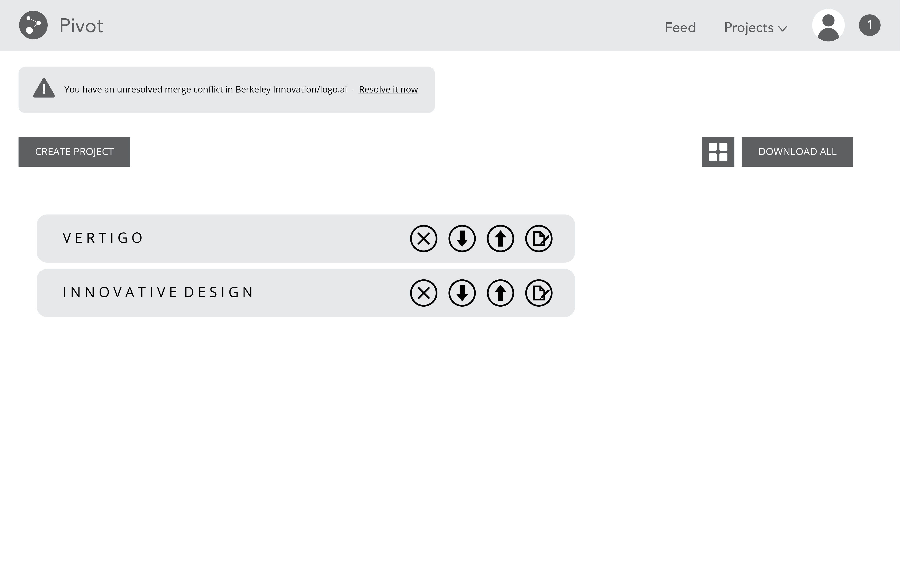 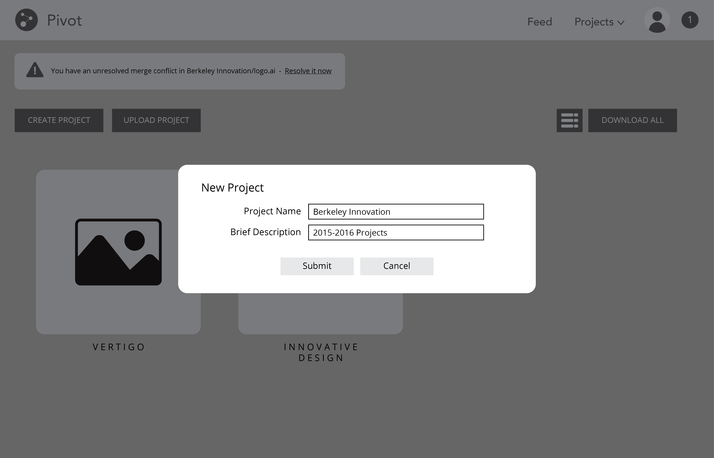
At this point, we were asked to come into Vertigo and give a presentation on our mid-fi mockups.
See Our Presentation
We received another round of input, and were told to make the following considerations:
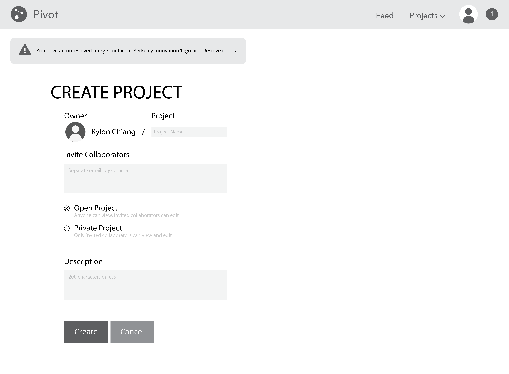
We still have a few more weeks to work on this project, but our next steps involve additional user testing, high-fidelity mockups, and an interactive prototype. Check back to see the rest of our project!
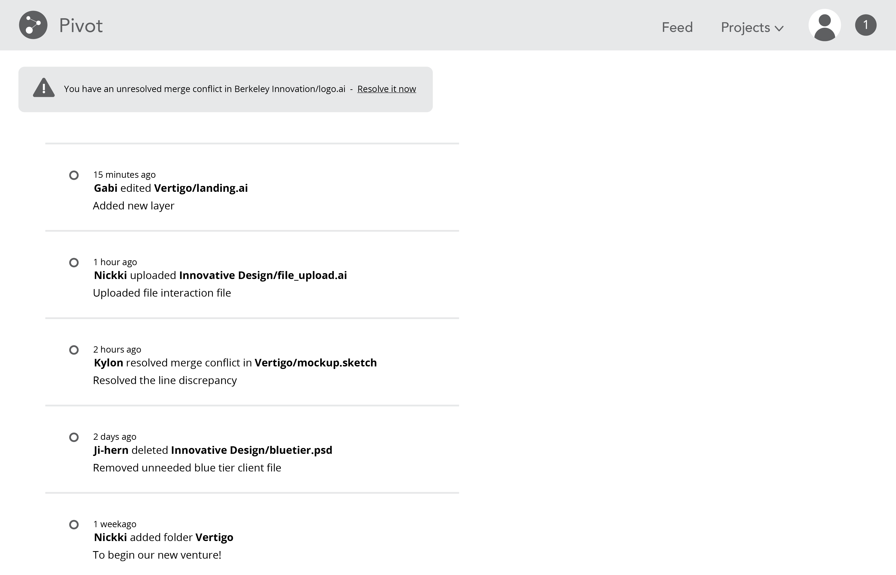 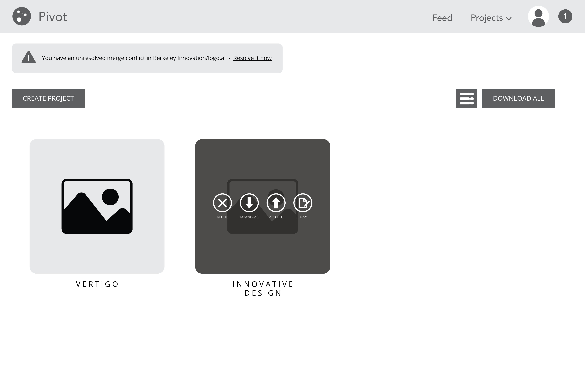 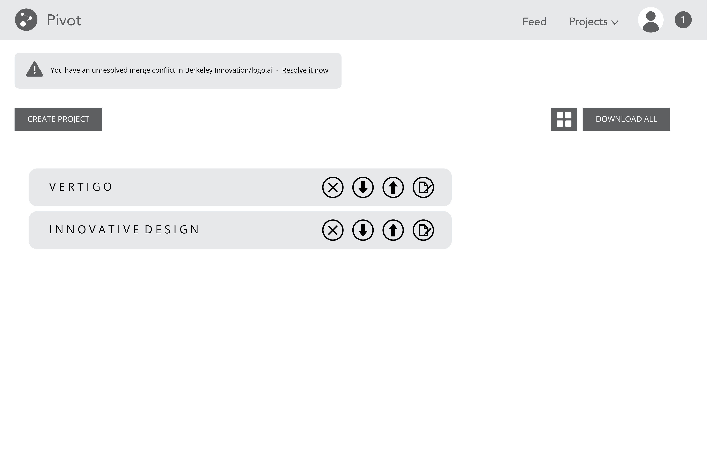 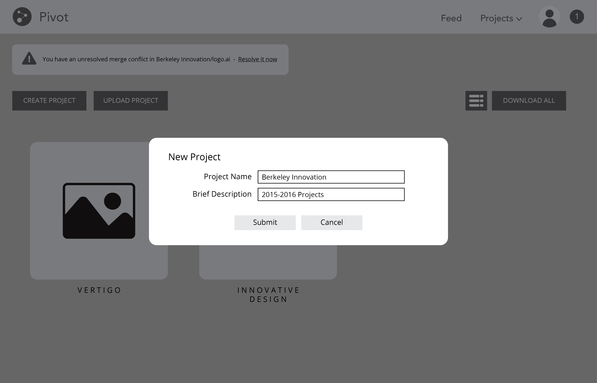
At this point, we were asked to come into Vertigo and give a presentation on our mid-fi mockups.
See Our Presentation
We received another round of input, and were told to make the following considerations:
- User onboarding
- Team collaboration/project collaboration
- Profile Pages
- Reverted commits
- Merge resolution options
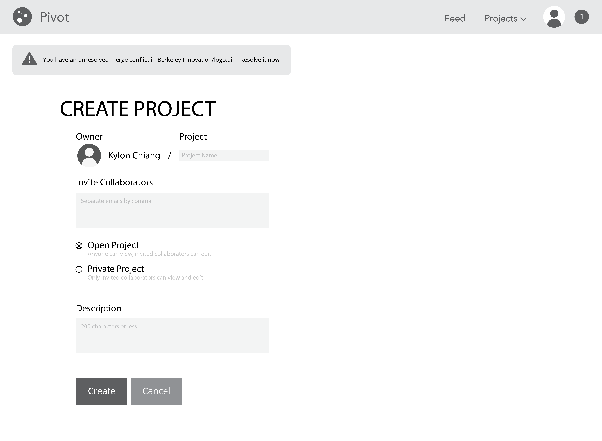
We still have a few more weeks to work on this project, but our next steps involve additional user testing, high-fidelity mockups, and an interactive prototype. Check back to see the rest of our project!
See Other Projects